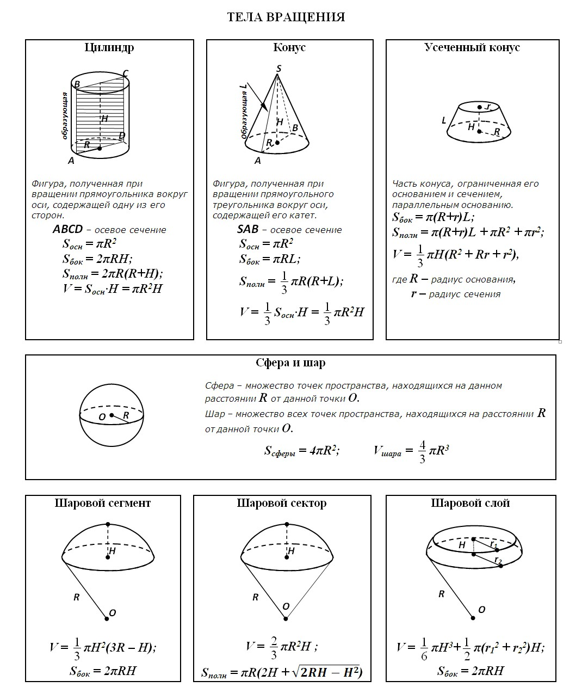
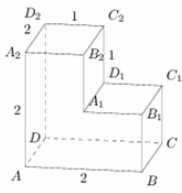
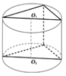

Для успешного решения задач такого типа необходимо умение работать с объёмными телами.
1. Найдите расстояние между вершинами В1 и D2 многогранника, изображенного на рисунке. Все двугранные углы многогранника прямые.

Ответ
3
2. В основании прямой призмы лежит прямоугольный треугольник с катетами 6 и 8. Боковые ребра призмы равны 6/π. Найдите объём цилиндра, описанного около этой призмы.

Ответ
150
3. Цилиндр и конус имеют общее основание, вершина конуса лежит на оси цилиндра, высота конуса относится к высоте цилиндра как 3:4. Найдите объём цилиндра, если объём конуса равен 30.
Ответ
120